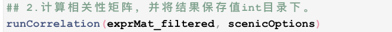

Step1——基于GENIE3包的潜在TF-靶基因网络识别
Last updated: 2021-08-20
Checks: 7 0
Knit directory: SCENIC_pipeline/
This reproducible R Markdown analysis was created with workflowr (version 1.6.2). The Checks tab describes the reproducibility checks that were applied when the results were created. The Past versions tab lists the development history.
Great! Since the R Markdown file has been committed to the Git repository, you know the exact version of the code that produced these results.
Great job! The global environment was empty. Objects defined in the global environment can affect the analysis in your R Markdown file in unknown ways. For reproduciblity it’s best to always run the code in an empty environment.
The command set.seed(20210818) was run prior to running the code in the R Markdown file. Setting a seed ensures that any results that rely on randomness, e.g. subsampling or permutations, are reproducible.
Great job! Recording the operating system, R version, and package versions is critical for reproducibility.
Nice! There were no cached chunks for this analysis, so you can be confident that you successfully produced the results during this run.
Great job! Using relative paths to the files within your workflowr project makes it easier to run your code on other machines.
Great! You are using Git for version control. Tracking code development and connecting the code version to the results is critical for reproducibility.
The results in this page were generated with repository version 0110fe0. See the Past versions tab to see a history of the changes made to the R Markdown and HTML files.
Note that you need to be careful to ensure that all relevant files for the analysis have been committed to Git prior to generating the results (you can use wflow_publish or wflow_git_commit). workflowr only checks the R Markdown file, but you know if there are other scripts or data files that it depends on. Below is the status of the Git repository when the results were generated:
Ignored files:
Ignored: .Rproj.user/
Unstaged changes:
Modified: analysis/_site.yml
Note that any generated files, e.g. HTML, png, CSS, etc., are not included in this status report because it is ok for generated content to have uncommitted changes.
These are the previous versions of the repository in which changes were made to the R Markdown (analysis/Step1_GENIE3_identification_of-potential_TF-targets_based_on_co-expression.Rmd) and HTML (docs/Step1_GENIE3_identification_of-potential_TF-targets_based_on_co-expression.html) files. If you’ve configured a remote Git repository (see ?wflow_git_remote), click on the hyperlinks in the table below to view the files as they were in that past version.
| File | Version | Author | Date | Message |
|---|---|---|---|---|
| Rmd | 728c832 | lily123920 | 2021-08-18 | diyici |
| html | 728c832 | lily123920 | 2021-08-18 | diyici |
GENIE3 package; 基因co-expression关系。
一、代码
##==转录调控网络推断==##
## 1.基因过滤
#过滤标准是基因表达量之和>细胞数*3%，且在1%的细胞中表达
genesKept <- geneFiltering(exprMat, scenicOptions,
minCountsPerGene = 3 * 0.01 * ncol(exprMat), # 每个基因的最低count数
minSamples = ncol(exprMat) * 0.01) # 至少在1%细胞内检测到
exprMat_filtered <- exprMat[genesKept, ]
## 2.计算相关性矩阵，并将结果保存值int目录下。
runCorrelation(exprMat_filtered, scenicOptions)
## 3. TF-Targets相关性回归分析,并将结果保存至int目录下。
exprMat_filtered_log <- log2(exprMat_filtered+1)
runGenie3(exprMat_filtered_log, scenicOptions, nParts = 20)
#这一步消耗的计算资源非常大，个人电脑需要几个小时的运行时间
## 4. 推断共表达模块
runSCENIC_1_coexNetwork2modules(scenicOptions)二、分析过程解析
（一）输入数据
表达矩阵。【优先count矩阵（read count或UMI count均可）；TPM或FPKM/RPKM也可】
（二）数据分析处理环节及对应的实现方式：
过滤低表达水平的基因。

计算相关性矩阵：所有基因对之间的
spearman correlation。
并将结果储存至
./int/1.2_corMat.Rds。数据内容如下：
涉及8810个基因，8810个基因✖️8810个基因的speaman correaltion coefficient
涉及8810个基因，8810个基因✖️8810个基因的speaman correaltion coefficient。
调用GENIE3，进行TF-Targets相关性回归分析【核心步骤】。
 并将最终结果保存至
并将最终结果保存至./int/1.4_GENIE3_linkList.Rds
1.3 为中间结果。20个文件对应nPart
1.3 为中间输出结果，20个.Rds文件对应参数nParts = 20，相当于把表达矩阵拆成20个部分进行分析。
1.4 为1.3结果的整合。内容如下：

TF，转录因子名称；Target —— 潜在靶基因的名字； weight ——TF与Target之间的相关性权重【这个概念需要重点理解】。
将GENIE3/GRNBoost结果转化为co-expression module.
计算过程基于1.4文件的结果，即TF与每一个潜在target gene的相关性。处理过程涉及对低相关性共表达TF-target的过滤，作者尝试了多种策略，研究发现没有一种最佳策略，因此建议
6种过滤标准均使用。（默认使用6种方法）。6种方法分别为：①
w001：以每个TF为核心保留weight>0.001的基因形成共表达模块；②
w005：以每个TF为核心保留weight>0.005的基因形成共表达模块；③
top50：以每个TF为核心保留weight值top50的基因形成共表达模块；④
top5perTarget：每个基因保留weight值top5的TF得到精简的TF-Target关联表，然后把基因分配给TF构建共表达模块；⑤
top10perTarget：每个基因保留weight值top10的TF得到精简的TF-Target关联表，然后把基因分配给TF构建共表达模块；⑥
top50perTarget：每个基因保留weight值top50的TF得到精简的TF-Target关联表，然后把基因分配给TF构建共表达模块；

并将最终结果保存至./int/1.6_tfModules_asDF.Rds。数据内容如下：


三、总结
以上运行结束后，会在SCENIC/int目录下生成以下rds格式数据。
第一步得到的final output: 1.6_tfModules_asDF.Rds 1. Target与TF：潜在的转录因子与靶基因对 2. method：筛选方法。六种筛选标准的解释见上。 3. corr：pearson correlation。 a. 基于基因的co-expression计算得出; b. 1.代表潜在激活效应；0代表无效应；-1代表潜在抑制效应。
小结：进入后续分析数据以“基因集”为单位进行分析。基因集的划分依据： 1. split by TF; 2. split by corr。 最终进入后续分析的基因集满足以下两个条件：1. 通过上述1-6种过滤标准后基因数仍>20；2. corr =1。即只考虑TF共表达基因集。
sessionInfo()R version 4.0.2 (2020-06-22)
Platform: x86_64-w64-mingw32/x64 (64-bit)
Running under: Windows 10 x64 (build 19043)
Matrix products: default
locale:
[1] LC_COLLATE=Chinese (Simplified)_China.936
[2] LC_CTYPE=Chinese (Simplified)_China.936
[3] LC_MONETARY=Chinese (Simplified)_China.936
[4] LC_NUMERIC=C
[5] LC_TIME=Chinese (Simplified)_China.936
attached base packages:
[1] stats graphics grDevices utils datasets methods base
other attached packages:
[1] workflowr_1.6.2
loaded via a namespace (and not attached):
[1] Rcpp_1.0.7 whisker_0.4 knitr_1.33 magrittr_2.0.1
[5] R6_2.5.0 rlang_0.4.11 fansi_0.5.0 stringr_1.4.0
[9] tools_4.0.2 xfun_0.24 utf8_1.2.1 git2r_0.28.0
[13] jquerylib_0.1.4 htmltools_0.5.1.1 ellipsis_0.3.2 rprojroot_2.0.2
[17] yaml_2.2.1 digest_0.6.27 tibble_3.1.2 lifecycle_1.0.0
[21] crayon_1.4.1 later_1.2.0 sass_0.4.0 vctrs_0.3.8
[25] promises_1.2.0.1 fs_1.5.0 glue_1.4.2 evaluate_0.14
[29] rmarkdown_2.9 stringi_1.5.3 bslib_0.2.5.1 compiler_4.0.2
[33] pillar_1.6.1 jsonlite_1.7.2 httpuv_1.6.1 pkgconfig_2.0.3